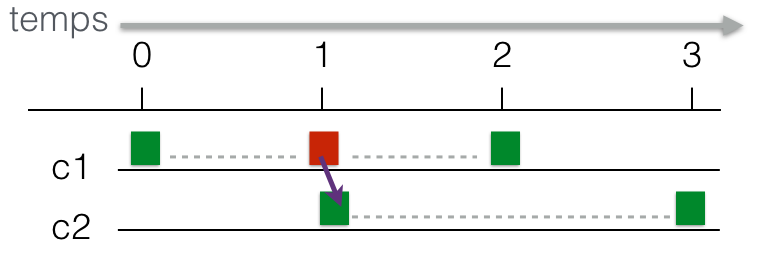

Licence CC BY-NC-NDThierry Parmentelat
boucle d’événements asyncio¶
Maintenant qu’on a vu les extensions asynchrones du langage, nous allons pouvoir nous intéresser d’un peu plus près aux boucles d’événements.
Jusqu’ici nous avons toujours utilisé nos boucles en utilisant await depuis le toplevel du notebook.
Bon d’abord il faut redire que cette méthode ne marche pas dans du “vrai” code Python, puisqu’on a vu qu’on n’avait pas le droit de faire await depuis du code synchrone.
Avec await on peut “lancer” une coroutine; du coup nous avons
utilisé gather pour montrer des exemples avec des traitements concurrents.
Mais bon, on ne peut pas toujours faire ça aussi simplement; il y a des cas bien entendu où il faut ajouter des traitements à la volée, et voyons comment ça se présente alors.
Bref, on va voir maintenant comment faire pour faire de l’asynchrone dans un vrai code Python.
import asyncio
utilitaire¶
Mais avant ça on va regarder un petit utilitaire que j’ai écrit juste pour ce cours, c’est extrêment simple on a deux fonctions, ce sont des fonctions synchrones (normales, pas des async), et voici ce qu’elles font:
from asynchelpers import start_timer, show_timer
# start_timer() ça mémorise l'heure courante
# et pour qu'on le voie bien ça écrit 'zéro'
start_timer()
# et ensuite j'appelle show_timer
# ça s'utilise comme print en fait
# sauf qu'en plus ça dit combien de temps
# s'est écoulé depuis le start_time()
show_timer('un message')
bref pour faire simple, on veut juste pouvoir utiliser show_timer(...) comme print(), mais que ça affiche en plus où on en est (le temps écoulé) dans le scénario
créer une boucle d’événements¶
le notebook ne se prête pas bien à cette partie¶
il y a quelques contraintes supplémentaires par rapport à ce qu’on a vu jusqu’ici, notamment on ne peut pas avoir plus d’une boucle d’événements active par thread
ça se comprend si on réalise que c’est la boucle d’événements qui contrôle tout se qui se passe dans le thread à un moment donné (il faudrait sinon une espèce de système de nested loops, mais c’est déjà assez compliqué comme ça)
MAIS il se trouve que dans le serveur Jupyter, il y a déja une boucle d’événements; ça aussi ça se comprend car par essence, les fonctionnalités de Jupyter sont très asynchrones si vous considérez qu’il faut
créer le kernel Python, et lire ses sorties (pour les afficher dans le
Out[]correspondant)et en même temps réagir aux actions de l’utilisateur, notamment réagir aux ‘Shift Enter’ que vous tapez dans les cellules de code…
Donc naturellement, le code du serveur Jupyter est .. écrit en code asynchrone, et donc il y a déjà une boucle d’événements qui est présente
cer qui induit certaines limitations sur ce qu’on peut faire dans le notebook quand on aborde cette partie du cours
C’est pourquoi on va faire le plus gros directement avec l’interpréteur Python
new_event_loop() et run_until_complete()¶
Pour créer une boucle d’événements on peut appeler asyncio.new_event_loop()
Et ensuite lui envoyer la méthode run_until_complete() qui
prend en paramètre un awaitable - pour l’instant, on va dire un objet coroutine
et le fait tourner, et garde le contrôle jusqu’à que son exécution termine
!cat exo1-simple-loop.py
!python exo1-simple-loop.py
OK, donc du coup cette formule magique
loop = asyncio.new_event_loop()
loop.run_until_complete(both())
remplace le await both() qu’on aurait fait si on avait été sous Jupyter; c’est vrai quand même que c’est plus pratique de faire juste await …
Remarque
Quand c’est aussi simple que ça, on peut aussi faire plus simplement
asyncio.run(both())
qui est également plus simple que notre formule magique; et c’est ça qu’on trouve d’ailleurs dans la plupart des petits exemples; je vous encourage à l’utiliser quand c’est possible, mais disons qu’avec notre version on comprend miexu ce qui se passe vraiment derrière la scène.
injecter un peu d’asynchrone dans du code synchrone¶
run_until_complete() c’est pratique pour des petits essais comme ça; c’est aussi utile lorsque vous avez une application qui est majoritairement synchrone, et que vous voulez juste injecter un tout petit peu de parallèlisme dedans.
Mettons que votre appli, qui n’a pas un gramme d’asynchrone dedans, a besoin de downloaded 4 URLs de manière efficace, vous pouvez tout à fait insérer le code de la séquence précédente pour passer de ceci
def mon_code_synchrone():
# le corps d'une fonction synchrone
# qui a besoin ICI de 4 URLS
remotes = []
for url in urls:
req = requests.get(url)
remotes.append(req.text)
# avant de continuer
pass
à ceci,
def mon_code_un_peu_asynchrone():
# la fonction reste synchrone
# mais elle sous-traite juste cette partie
# à une boucle d'événements
loop = asyncio.new_event_loop()
async def fetch(url):
async with aiohttp.ClientSession() as session:
async with session.get(url) as response:
return await response.read()
remotes = loop.run_until_complete(
asyncio.gather(*(fetch(url) for url in urls)))
# ici on repasse dans le mode purement synchrone
pass
qui va aller beaucoup plus vite, comme on l’a vu, mais sans changer fondamentalement la logique de l’application; remarquez que dans les deux versions la fonction qui nous intéresse est une fonction synchrone (normale quoi) définie sans async
ajout de traitements¶
Quand on commence à ajouter comme ça de l’asynchrone, assez vite on se retrouve à avoirune seule boucle d’événements dans laquelle on ajoute au fil de l’eau des trucs à faire - comme le serveur Jupyter par exemple.
Pour ce genre d’usages-là, la librairie propose deux autres mécanismes de base qui sont
ensure_future, pour ajouter un traitement dans la boucle, avant ou après qu’elle a commencéet aussi
run_forever, qui fait tourner une boucle d’événements indéfiniment; cette méthode sur les boucles ne prend aucun argument, ce qui suppose qu’on a donc rempli la boucle au préalable avec, justement,ensure_future
asyncio.ensure_future()¶
et pour illustrer ensure_future, le plus simple c’est cette fois .. dans le notebook Jupyter; on a vu qu’il y a déjà une boucle d’événements active :
# dans le notebook on a déjà une boucle d'événements !
asyncio.get_event_loop()
et comme j’ai cette boucle active, je peux y ajouter par exemple un objet coroutine
async def loop1():
for _ in range(3):
show_timer('tick1')
await asyncio.sleep(0.1)
async def loop2():
for _ in range(6):
show_timer('tick2')
await asyncio.sleep(0.05)
async def both():
await asyncio.gather(loop1(), loop2())
asyncio.ensure_future(both())
loop.run_forever()¶
cette méthode ne prend pas d’argument, elle va juste faire tourner la boucle jusqu’à la fin des temps (on verra après comment l’arrêter, si besoin)
je vais l’utiliser pour implémenter un workflow comme celui de la figure; le point ici c’est qu’au départ on ne sait pas le nombre de tâches à faire en parallèle, et que donc il ous faut apprendre comment ajouter des trucs à faire au fil de l’eau.

remarquez le In [*] qui reste affiché tant que le programme n’est pas terminé
!cat exo2-fork.py
# à ce stade on n'a rien prévu dans le code pour terminer la boucle,
# attention à bien interrompre après quelques secondes
# avec Kernel -> Interrupt (raccourci clavier : 2 fois la touche 'i' )
!python exo2-fork.py
petite remarque sur la boucle courante¶
à la fin du code précédent, au lieu de
loop = asyncio.new_event_loop()
asyncio.ensure_future(c1(), loop=loop)
on aurait pu aussi bien écrire ceci
asyncio.ensure_future(c1())
asyncio.get_event_loop().run_forever()
c’est vrai que c’est un petit peu plus simple, mais ça utilise la notion de boucle courante (get_event_loop()) qui est à mon avis un peu plus dangereuse car elle dépend d’un état qu’on ne contrôle pas toujours; bref c’est une question de goût…
sachez pour conclure dans cette rubrique qu’il existe aussi une fonction pour choisir la boucle courante
asyncio.set_event_loop(loop)
si bien qu’on peut faire en quelque sorte un reset en faisant ceci
asyncio.set_event_loop(asyncio.new_event_loop())
mais tout ça est plutôt de second ordre…
loop.stop()¶
on peut arrêter une boucle avec une fonction (synchrone) voici une version quasiment identique de l’exo précédent mais qui s’arrête toute seule à la fin du scénario
question subsidiaire: pourquoi est-ce que c’est une fonction synchrone ?
# essentiellement on a juste ajouté une ligne
!diff exo2-fork.py exo3-fork-and-stop.py
# cette fois-ci ça s'arrête tout seul..
!python exo3-fork-and-stop.py
run_until_complete sur une boucle non-vide¶
Ce qu’il faut bien comprendre c’est que la boucle d’événements peut très bien être suspendue avant la fin; dans ce cas lorsqu’on la relance ces ‘arriérés’ sont exécutés quand même
pour illustrer ça j’utilise une fonction sequence dans asynchelpers qui fonctionne comme ceci
from asynchelpers import sequence
# juste une fonction qui dure un certain temps et qui imprime avant et après.
await sequence("hello", delay=0.5)
!cat exo4-until-complete+forever.py
# à nouveau ici il faudra interrompre le kernel car le programme boucle sans fin
!python exo4-until-complete+forever.py
run_until_complete vs run_forever¶
run_until_completeprend exactement un argument
retourne la valeur
insérer un fragment asynchrone au milieu d’un code synchrone
run_foreverne prend pas d’argument
ne retourne pas (sauf en cas de
stop())orienté traitement massivement asynchrone
Si on se met à aller plus loin dans le parallèlisme, on va devoir convertir de plus en plus de fonctions de synchrone en asynchrone (c’est pour ça qu’on dit que le paradigme est contagieux)
Task, résultats et exceptions¶
Pour compléter le tableau, il nous faut dire un mot sur les résultats
Quand on met des trucs à faire dans la boucle, ce serait bien qu’on arrive à savoir (après coup, mais pas que) si ces bouts de calcul ont retourné quelque chose, ou si quelque chose est allé de travers; pour ça il y a le type Task
En fait la méthode ensure_future() retourne un objet de type Task
task_ok = asyncio.ensure_future(sequence('dummy', delay = 3))
type(task_ok)
retouver les résultats des calculs¶
il se trouve que - c’est exprès pour pour cet exemple-ci - la coroutine sequence retourne 10*delay
et l’objet Task est intéressant parce qu’il nous permet de récupérer le résultat de la coroutine:
# je peux retrouver après coup le résultat de la coroutine
# que j'avais soumise avec ensure_future un peu plus haut
# attention il faut bien sûr qu'elle soit terminée
task_ok.result()
exceptions¶
Et alors que se passe-t-il avec les exceptions ?
Lorsqu’une exception est levée dans le code asynchrone, tout se passe comme d’habitude, on recherche dans la pile (parce que chacune des coroutines a sa propre pile) mais on se limite au code asynchrone bien entendu.
Il faut distinguer deux cas de figure:
soit l’exception est attrapée dans le code asynchrone, dans ce cas-la pas de lézard, la coroutine continue à cet
exceptet pour la boucle d’événements, c’est comme s’il ne s’était rien passésoit au contraire l’exception remonte jusqu’au fond de la pile (asynchrone); là c’est plus compliqué. Pour ne pas avoir à interrompre tout le système, ce que fait la boucle dans ce cas-là, c’est de ranger l’exception dans l’objet
Task, et de considérer que cette tâche là est terminée.
Dans ce dernier cas, on peut retrouver l’information dans l’objet Task avec la méthode exception(); voyons tout de suite un exemple
async def boom(n):
print(f"running boom({n})")
if n == 1:
raise Exception("boom")
else:
await boom(n-1)
# on la fait tourner
task_ko = asyncio.ensure_future(boom(4))
Entre parenthèse, remarquez que c’est heureux que l’exception n’ait pas été propagée au delà de la boucle d’événements; parce qu’en l’occurrence ici, c’est .. la boucle du serveur Jupyter; et donc si elle s’était arrêtée, je n’aurais plus de notebook…
Mais quand même, ça pose un gros problème ! ça veut dire en gros qu’une exception peut se déclencher et ensuite passer complètement inaperçue !!
Et pour éviter ça, ce qui se passe c’est que
donc comme on l’a dit plus haut on peut accéder à l’exception des tâches
et en plus Python va s’assurer que toutes les exceptions ont bien été lues
dit autrement on doit lire l’exception de toutes les tâches qui sont lancées et qui ont planté à cause d’une exception
# ici en lisant l'exception je signifie que j'ai vu qu'il y avait un souci
task_ko.exception()
C’est important de bien comprendre ce point; dès que vous allez commencer à écrire du vrai code asynchrone, vous allez constater assez souvent que
certains trucs ne se passent pas comme prévu
et bien longtemps après vous allez recevoir des tas de message parlant d’exception non traitées
Il faut penser à faire le lien entre les deux; c’est parce que c’est compliqué pour la boucle de savoir à quel moment elle doit se plaindre que l’exception d’une tâche n’a pas été lue, elle a des heuristiques mais bon rien n’est parfait dans ce domaine.
Et c’est le moment justement de parler des bonnes pratiques pour le debug, qui sont détaillées ici
https://docs.python.org/3/library/asyncio-dev.html
où vous trouverez entre autres la recette à savoir absolument pour activer le debugging, qui est de définir la variable d’environnement PYTHONASYNCIODEBUG - et pour ça lancez dans le terminal (bash)
PYTHONASYNCIODEBUG=1 python votre-script.py
résumé¶
ensure_future()pour ajouter des trucs à faire (des tâches)run_until_complete()etrun_forever()loop.stop()le type
Taskpour inspecter une tâche *(en train de tourner ? résultat ? exception ?)être attentif aux exceptions qui ont tendance à être signifiées bien après qu’elles se produisent